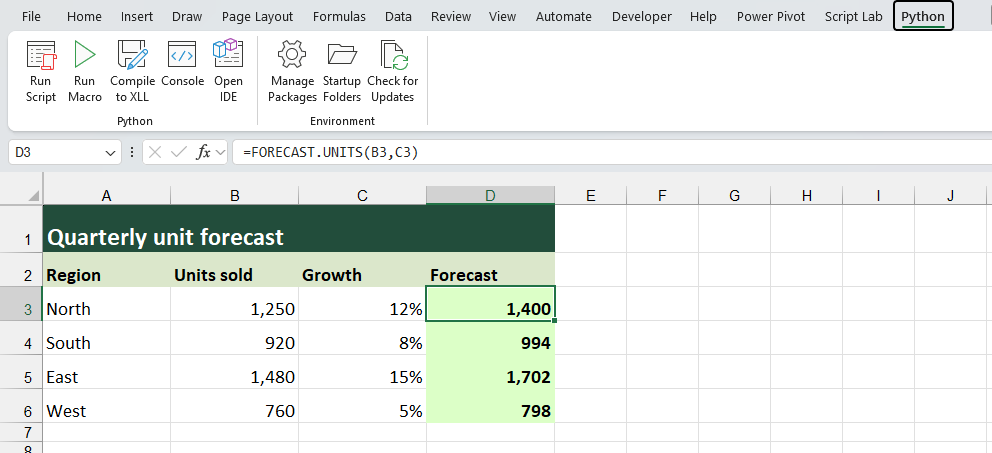

Call Python from a cell
Save the example file in a folder you trust. In Python → Startup Folders, add that folder under Worksheet functions and choose Refresh.
Open the starter workbook. In D3, enter =FORECAST.UNITS(B3,C3) to get 1,400. Fill the formula down to D6 for the other regions.
